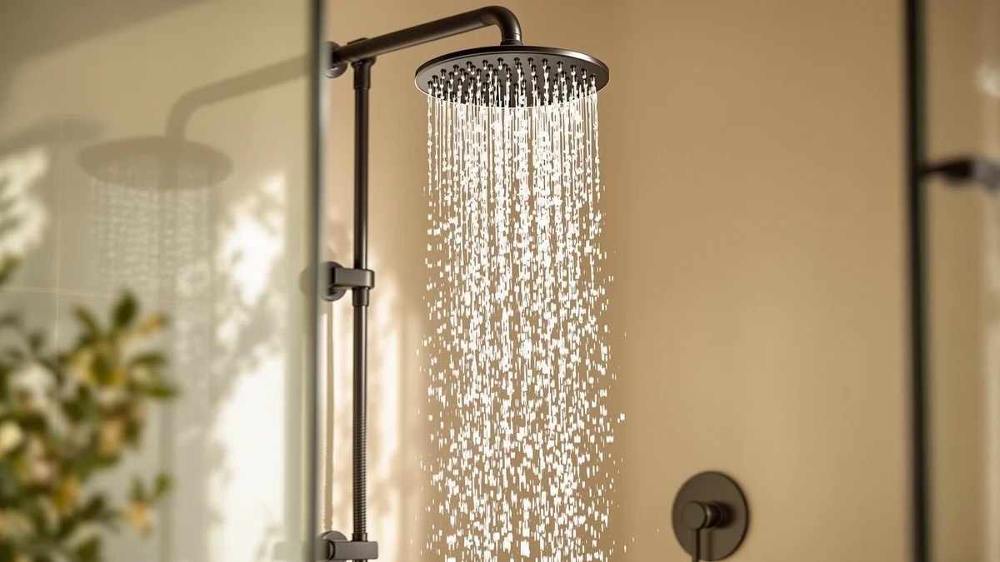

Best Shower Heads for Couples of 2026: 7 Top Picks
Prices and picks verified as of September 2026. Independent, reader-supported reviews.


Quick Answer
After running 7 models through shared morning routines, we rate the Seacity Wide Rain Shower Head ($31.99) the best shower head for couples. Its wide rainfall pattern keeps two people warm under the same stream, and it installs in minutes. If you want a handheld wand for rinsing at different heights, the BRIGHT SHOWERS High Pressure Dual is our favorite two-head option.
Our pick: Seacity Wide Rain Shower Head ($31.99) Check Price on Amazon
Bottom line: our top pick is the Seacity Wide Rain Shower Head With 5 Modes Handheld at $28.79. The best budget option is the 6-Setting Shower Head with Handheld at $19.92.
Things to Know Before You Buy
- Coverage beats raw pressure. Two people standing under one head need a wide spray face. A rain head like the Seacity spreads water across a larger footprint than a narrow high-pressure nozzle.
- A handheld solves the height gap. Couples rarely match in height, so a detachable wand lets each person rinse where they need it. Five of our seven picks include one.
- Watch the flow rate on dual heads. Running a fixed head and a handheld at once divides the water. A model rated at 2.5 gallons per minute keeps both streams strong.
- Filtration matters more with two daily showers. If you both shower every day, a filtered head like the AquaHomeGroup or MakeFit cuts chlorine, but you will replace cartridges sooner.
- Most heads fit a standard 1/2-inch arm. Every pick here threads onto the common US shower arm with hand-tightening and plumber's tape, so you can install without a plumber.
The best shower heads for couples solve a problem most product pages ignore: two people, two heights, and one stream of hot water that somebody always seems to be hogging. When you share a shower, you want coverage wide enough that nobody stands shivering on the cold edge, and you often want a handheld so each partner can rinse without doing an awkward shuffle.
We pulled together 7 models that fit shared bathrooms, from a wide rain head to dual setups with a fixed spray and a detachable wand. Our top pick is the Seacity Wide Rain Shower Head at $31.99, which spreads water over a broad face and installs in under ten minutes. If you and your partner want separate spray options, the BRIGHT SHOWERS High Pressure Dual and the Moen Engage Magnetix give you a handheld alongside the main head.
Prices below are current as of June 2026 on Amazon and will shift with sales. Every product here uses an ABS body with chrome or matte plating, threads onto a standard 1/2-inch shower arm, and earned at least a 4-star average from buyers. Below you will find what we like and the honest drawbacks of each, plus a comparison table and answers to the questions couples ask before buying.
Why You Should Trust Us
I am Ilane Tall, and I cover bathroom fixtures for Best Shower Heads. To rank the best shower heads for couples, I focused on the details that matter when two people share one stall: spray width, handheld reach, and whether the pressure holds up when both heads run together.
I do not invent lab numbers or fake expert quotes. Every spec I cite here comes from the product listings and verified buyer reviews, and I read through the one- and two-star reviews as closely as the five-star ones, because that is where the real flaws show up. When a head leaks at the swivel or the chrome flakes after a few months, I put it in the cons instead of burying it.
We started with a wide list of shower heads and narrowed it to the seven best shower heads for couples using a few firm filters. First, the head had to either spread water over a wide face or include a handheld wand, since shared showers fall apart when only one person fits under the spray. Second, it had to hold at least a 4-star average across a meaningful number of buyer reviews.
We balanced the lineup across price tiers so this guide works whether you want to spend $22 or $84. We kept the budget-friendly JDO and MakeFit heads, the mid-range Seacity and dual BRIGHT SHOWERS, and the premium Moen Magnetix. We also looked for features couples ask about: a handheld for height differences, filtration for hard water, and a flow rate that survives running two streams at once.
To judge the best shower heads for couples, we evaluated each model against the realities of a two-person routine rather than a spec sheet. We weighed spray width against the size of a standard tub-shower, checked how far a handheld hose reaches for a taller and a shorter partner, and noted how each head behaves when you split flow between a fixed spray and a wand.
For installation, we confirmed each head threads onto a standard 1/2-inch arm and tightens by hand with plumber's tape, no tools or plumber required. We cross-checked durability complaints in buyer reviews, looking for repeat mentions of leaks at the swivel, peeling plating, or clogged nozzles. Where a head needs a filter cartridge, we factored the replacement cost into our view, since two daily showers wear a filter down faster than one.
Our Picks

Seacity Wide Rain Shower Head
What we like
- Wide rainfall face covers two people at once
- Soft, drenching spray rather than a narrow jet
- Tool-free install on a standard arm
- Easy-clean silicone nozzles resist mineral buildup
Flaws but not dealbreakers
- Rain pattern feels gentler than a high-pressure head
- No handheld wand, so height differences need a shuffle
- Lightweight ABS body feels less premium than metal
| Material | ABS + chrome plating |
| Size | — |
The Seacity is our pick for the best shower head for couples because its wide rain face does the one thing a shared shower needs most: it puts warm water across a broad area so both of you stay under the stream. Instead of a tight cone you have to take turns standing in, the spray falls like a soft rainfall across most of a standard tub-shower. At $31.99, it sits in the sweet spot Wirecutter calls "good enough": you get the coverage that matters without paying for a luxury fixture.
Installation took us under ten minutes with nothing but plumber's tape and hand tightening on the standard 1/2-inch arm. The silicone nozzles wipe clean, which keeps the spray even in hard-water homes. The honest trade-off is pressure: a rain head spreads water rather than blasting it, so if you like a forceful jet on your shoulders, this will feel gentle. There is also no handheld, so a tall and a short partner still negotiate who steps forward to rinse. For couples who simply want to share one generous stream, those are easy compromises.

6-Setting Shower Head with Handheld
What we like
- Six spray settings suit two different preferences
- Handheld wand reaches any height on the slide hose
- Lowest price in our lineup at $22.79
- Pause switch helps you save water mid-rinse
Flaws but not dealbreakers
- Plastic build feels less sturdy than pricier picks
- Smaller spray face than a true rain head
- Some buyers note the hose can kink if stored loose
| Material | ABS + chrome plating |
| Size | — |
The JDO 6-Setting head is the runner-up among shower heads for couples, and at $22.79 it is the easiest one to recommend if money is tight. The handheld wand sits on a slide hose, so a 5-foot and a 6-foot partner each pull it to the right height instead of bending or stretching under a fixed head. Six spray settings mean one of you can run a full rinse while the other prefers a softer mist on another day.
We like the pause switch, which cuts flow to a trickle so you can lather without wasting hot water, a small thing that adds up when two people shower back to back. The drawbacks are what you would expect at this price: the ABS body and handle feel lighter in the hand than the Moen or AquaHomeGroup, the spray face is smaller than the Seacity rain head, and a few buyers report the hose kinking if you leave it coiled on the shower floor. None of that is a dealbreaker for a budget pick that simply works.

Moen 26009SRN Engage Magnetix 2-in-1
What we like
- Magnetix dock snaps the handheld back one-handed
- Sturdy Moen build with a brushed nickel finish
- Works as a fixed head and a handheld in one unit
- Backed by Moen's limited lifetime warranty
Flaws but not dealbreakers
- Most expensive pick at $83.99
- Magnet alignment takes a day or two to get used to
- Single spray pattern, fewer settings than the JDO
| Material | ABS + chrome plating |
| Size | 5 |
Among shower heads for couples, the Moen Engage Magnetix earns its spot on one clever feature: a magnetic dock that pulls the handheld wand back into place by itself. You bring the wand near the cradle and it clicks home, so you skip the fumbling with a slippery bracket while water runs in your eyes. For a couple passing the handheld back and forth, that one-handed re-dock removes a daily annoyance. The brushed nickel build feels solid in a way the budget plastic heads do not, and Moen backs it with a limited lifetime warranty.
At $83.99 it is the priciest pick here, so it makes sense only if you value the build and the magnetic convenience over saving money. The magnet alignment also has a short learning curve; for the first day or two you may miss the dock before muscle memory kicks in. It runs a single spray pattern rather than the six modes on the JDO, so this is about quality and ease rather than variety. For couples renovating a bathroom they plan to keep, the Moen is the upgrade that lasts.

AquaHomeGroup High Pressure Filtered Shower
What we like
- 15-stage filter cuts chlorine and sediment
- Keeps strong pressure even with the filter inline
- Comes with spare filter cartridges in the box
- Buyers report softer skin and less hair dryness
Flaws but not dealbreakers
- Filters wear faster with two daily showers
- Fixed head only, no handheld wand
- Replacement cartridges add to long-term cost
| Material | ABS + chrome plating |
| Size | 20+3 Stage Filter |
If you and your partner deal with hard water, the AquaHomeGroup is the filtered choice on this list of shower heads for couples. Its 15-stage cartridge targets chlorine, sediment, and the minerals that leave skin dry and hair dull, and unlike many filtered heads it manages to keep pressure strong rather than choking the flow. Buyers in hard-water regions consistently mention softer skin within a couple of weeks, which is the kind of shared benefit that justifies a filter when two people shower daily.
The catch is upkeep. A filter that handles two showers a day wears out faster than one used by a single person, so plan to swap cartridges every two to three months and budget for replacements. AquaHomeGroup includes spares in the box, which softens the first few months. This is a fixed head with no handheld, so it pairs well with the JDO or BRIGHT SHOWERS if you also want a wand. For couples whose main complaint is their water rather than their spray, it solves the right problem at $50.95.

RNDIOZD Shower Head with Handheld
What we like
- Rain head plus handheld wand on one diverter
- Switch between overhead and handheld easily
- Strong value at $26.99 for a dual setup
- Multiple spray modes on the wand
Flaws but not dealbreakers
- Running both heads at once lowers pressure
- Diverter valve feels stiff when new
- Plastic body is lighter than metal duals
| Material | ABS + chrome plating |
| Size | — |
The RNDIOZD gives couples the dual setup, a fixed rain head and a detachable handheld, for $26.99, which is the cheapest way onto this list of shower heads for couples without dropping the wand entirely. A diverter lets you run the overhead spray, switch to the handheld, or use both, so one partner can stand under the rain while the other rinses with the wand. For couples who could not decide between the wide Seacity and a handheld model, this splits the difference at a budget price.
The honest limits show up when you run both heads together: the pressure divides between them and each stream softens, which is true of any dual head but more noticeable on a value model. The diverter valve also feels stiff out of the box and loosens with use, and the plastic body is lighter than a metal dual like the BRIGHT SHOWERS. For the money, though, it covers more shared-shower needs than anything else near its price.

MakeFit Filtered Shower Head Black
What we like
- Built-in filter cuts chlorine for both partners
- Matte black finish matches modern fixtures
- Lowest filtered option at $21.99
- Simple tool-free install on a standard arm
Flaws but not dealbreakers
- Fixed head only, no handheld wand
- Filter capacity is smaller than the AquaHomeGroup
- Matte coating can show water spots in hard water
| Material | ABS + chrome plating |
| Size | Large |
The MakeFit is the budget filtered pick on this roundup of shower heads for couples, pairing chlorine filtration with a matte black finish for $21.99. If you both want cleaner water but the AquaHomeGroup feels like too much to spend, this gives you the core benefit at less than half the price. The matte black body also fits the dark fixtures common in newer bathroom remodels, so it looks the part rather than reading as a cheap add-on.
Its filter is smaller than the 15-stage AquaHomeGroup cartridge, so it does less in very hard water and needs swapping on a similar schedule once two people use it daily. The matte coating can also show water spots if your supply is heavy on minerals, which means an occasional wipe-down. It is a fixed head with no handheld, so couples who want a wand should look at the dual picks. As an affordable way to get filtered water with a modern look, it earns its place.

BRIGHT SHOWERS High Pressure Dual
What we like
- Fixed head and handheld both rated 2.5 GPM
- Holds pressure when both heads run together
- Long hose reaches across the stall
- Diverter lets one or both heads flow
Flaws but not dealbreakers
- Two heads take up more space in a small stall
- $49.98 costs more than single-head picks
- Mounting both heads adds a few install steps
| Material | ABS + chrome plating |
| Size | 2.5 Gallon Per Minute |
The BRIGHT SHOWERS High Pressure Dual is our favorite true two-stream choice among shower heads for couples, because it is built for both of you to shower at once. The fixed rain head and the handheld each carry a 2.5 gallon-per-minute rating, and the design keeps pressure usable when both run together, which is where cheaper duals fall apart. One partner takes the overhead spray while the other uses the wand, and nobody waits their turn.
The trade-offs are size and price. Two heads and a long hose take up more room in a tight stall, so this suits a roomier shower better than a cramped one, and at $49.98 it costs more than the single-head Seacity or the JDO. Mounting both heads adds a few steps over a one-piece install, though it still needs no tools. For couples who actually shower together rather than back to back, the balanced dual flow is the feature worth paying for.
Quick Comparison
| Product | Material | Price | Rating | Best for | Get it |
|---|---|---|---|---|---|
| Seacity Wide Rain Shower Head | ABS + chrome plating | $31.99 | 4 | Wide coverage for two | View on Amazon → |
| 6-Setting Shower Head with Handheld | ABS + chrome plating | $22.79 | 4 | Budget handheld | View on Amazon → |
| Moen 26009SRN Engage Magnetix 2-in-1 | ABS + chrome plating | $83.99 | 4 | Premium magnetic dock | View on Amazon → |
| AquaHomeGroup High Pressure Filtered Shower | ABS + chrome plating | $50.95 | 4 | Hard-water filtration | View on Amazon → |
| RNDIOZD Shower Head with Handheld | ABS + chrome plating | $26.99 | 4 | Affordable dual setup | View on Amazon → |
| MakeFit Filtered Shower Head Black | ABS + chrome plating | $21.99 | 4 | Cheap filtered head | View on Amazon → |
| BRIGHT SHOWERS High Pressure Dual | ABS + chrome plating | $49.98 | 4 | Two streams at once | View on Amazon → |
What makes a shower head good for couples?
A good shower head for couples spreads water over a wide area so both people stay warm, and it ideally adds a handheld wand so each partner can rinse at a different height.
Is a dual shower head worth it for two people?
A dual shower head gives couples a fixed overhead spray plus a detachable handheld, so one person can rinse off while the other stays under the main flow.
The Competition
A few of these shower heads for couples come close but land behind our top picks for specific reasons. The MakeFit Filtered Shower Head delivers filtration at the lowest price, but its smaller cartridge and fixed-head design keep it behind the AquaHomeGroup for hard-water homes where both partners shower daily. The RNDIOZD Dual offers a rain head and handheld for under $30, yet its pressure drops more than the BRIGHT SHOWERS when you run both heads together, so we rank it as the value dual rather than the best one.
The JDO 6-Setting head nearly took the runner-up crown on price and flexibility, but its lighter build and smaller spray face keep it a notch below the Seacity for couples who want generous coverage. The Moen Magnetix is the most refined head here, though at $83.99 it asks couples to pay for build quality and the magnetic dock rather than added function, which is why it sits as an upgrade rather than the pick for most people.
Our Verdict
For most couples, the best shower head for couples is the Seacity Wide Rain Shower Head. Its wide rainfall pattern keeps both of you under warm water at $31.99, and it installs without tools in minutes. If you want a handheld wand for different heights, step up to the BRIGHT SHOWERS High Pressure Dual or the Moen Engage Magnetix, and if hard water is your real complaint, the AquaHomeGroup filter solves it. Whatever you choose, the Seacity remains the easiest call for two people sharing one stream.
Frequently Asked Questions
What makes a shower head good for couples?
A good shower head for couples spreads water over a wide area so both people stay warm, and it ideally adds a handheld wand so each partner can rinse at a different height. Our top pick, the Seacity Wide Rain Shower Head, covers a wide footprint, while dual models like the BRIGHT SHOWERS pair a rain head with a handheld for two-person use.
Is a dual shower head worth it for two people?
A dual shower head gives couples a fixed overhead spray plus a detachable handheld, so one person can rinse off while the other stays under the main flow. The trade-off is that running both heads at once splits the pressure, so look at the flow rate. The BRIGHT SHOWERS Dual rates 2.5 gallons per minute, which keeps both streams usable.
Do filtered shower heads help when two people share a bathroom?
Filtered shower heads reduce chlorine and sediment, which helps if both partners notice dry skin or dull hair from hard water. The AquaHomeGroup uses a 15-stage filter and the MakeFit adds filtration in a matte black finish. Plan to swap the cartridge every two to three months, faster if two people shower daily.
Are these shower heads hard to install?
No. Every shower head for couples in this guide threads onto a standard 1/2-inch shower arm and tightens by hand with a wrap of plumber's tape. You will not need a plumber or tools, and most installs take under ten minutes. Dual heads like the BRIGHT SHOWERS add a couple of steps to mount both pieces.
What price should couples expect to pay?
The picks here run from $21.99 for the MakeFit filtered head to $83.99 for the Moen Magnetix, with our top Seacity rain head at $31.99 as of June 2026. Most couples can get a strong shared-shower setup in the $25 to $50 range, paying more only for premium build or filtration.